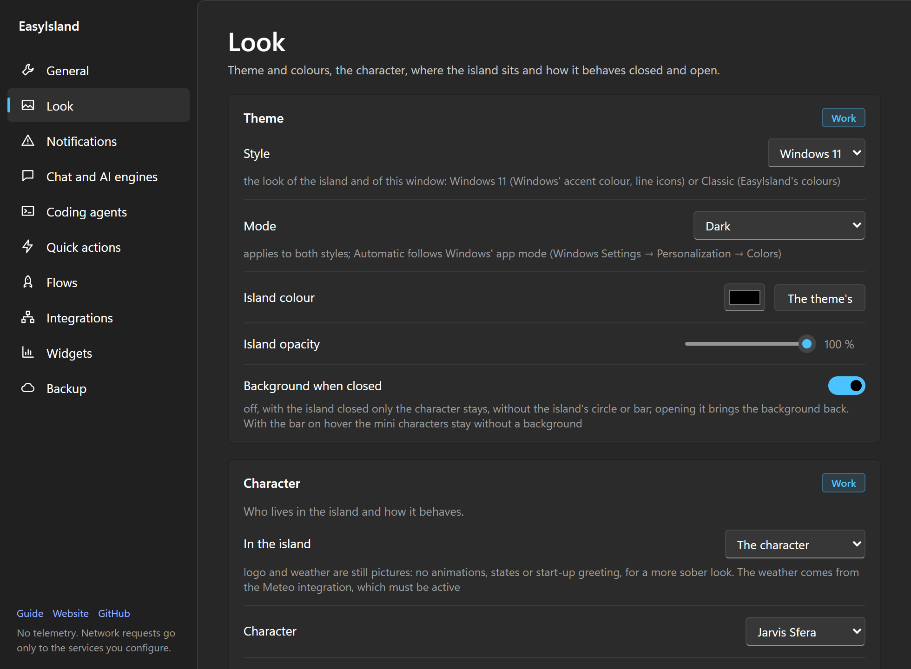

Position and look
Style, light or dark mode, characters, where the island lives and how it behaves closed and open, sounds and language.
Everything is in Settings → Look. Sections with the purple label are saved in the active profile.

The page has six tabs at the top: Theme, Character, Position, Fixed bar, Closed island and Open island; the window remembers the last one open. Next to each setting a small picture shows what it changes: a tiny screen with the island, the character or the bar, redrawn as soon as you change the value (some are animated, for example the mouse arriving and the island opening). In Character the chosen character moves as it does in the island; in Position a click on a spot of the tiny screen picks the corner. Sound volumes are in General, next to Sound.
#Theme
- Style: Windows 11 (default: like system apps, with Windows' accent colour and line icons) or Classic (the original look with coloured icons).
- Mode: Dark (default), Light or Automatic (like Windows), which follows Windows' app mode (Windows Settings → Personalization → Colors) and switches by itself when you change it there. It applies to both styles, to the island and to the Settings window.
- Island colour and opacity: "The theme's" is Windows' grey or the Classic black, their light counterpart in light mode; a colour you pick stays yours.
- Background when closed: off, only the character stays.
#Character
- In the island: the character, the EasyIsland logo, your logo or the weather (see below).
- Character and its colour.
- Start-up greeting: by default the EasyIsland logo drawing itself (the rainbow edge, the tail, then the eyes), or the character; in the middle of the screen or where the character is.
- Follows the mouse: in the compact view too the character looks at the cursor (uses a little more).
- Speech bubble: at the top the character says what is going on.
- Character in the menu: large, medium or small at the top of the open island's menu.
#Position
- Screen: the main one, the one under the cursor or the one you dragged it to (if unplugged, it goes back to the main one).
- Screen corner: top or bottom, left, centre or right. The island grows from there and its content stays aligned to that side. You can also drag the character anywhere; picking a corner again brings it back to the edge.
- Over the taskbar: the character may also sit over the taskbar.
- Snap to edges: near an edge the background sticks to it with square corners; off, the island stays off every edge, top centre included.
- Full screen: during videos, games and presentations the character disappears; permissions still show.
#Fixed bar
With Fixed bar at the top or the bottom, Windows keeps a band free at the edge of the screen, as for the taskbar, and windows stop there.
- In the bar: as in the island, or the EasyIsland logo, animated or still, even with another character in the island.
- Character in the bar: at the start, in the centre or at the end. It cannot be dragged; a click opens the island right below the bar (above it, if the bar is at the bottom) and another closes it. When closed, the island is not there: the bar is.
- Bar height: automatic (as tall as the compact view) or your own; the character, icons and text adapt.
- Bar background: like the island, transparent (the desktop shows) or a colour of your choice; the text turns light or dark by itself.
- Bar look (every choice can be left as it is):
- Style: one whole band, or islands: each area (start, centre, end) has its own rounded background and the desktop shows in between; the character sits in its area's island.
- Background opacity and Blur behind the bar (Windows blurs what is behind it; it shows with the opacity under 100% and not with islands).
- Margin from the sides: the background leaves the left and right edges, for a floating bar.
- Text size and Room between elements.
- Shadow: a light shadow under the bar, or above it when the bar is at the bottom.
- Cards come out of the bar: a click on an element (clock, volume, an integration such as Clipboard, the news…) opens a small island that comes out of the bar right under it, with just its card, instead of the whole island. It is as tall as its content; a click outside closes it.
- The character grows under the mouse: with the mouse over it the character (or the logo) grows and the bar swells smoothly around it.
- Hide by itself: only a thin line stays on the edge; bring the mouse there and the bar comes out, then goes away shortly after the mouse leaves. Windows no longer keeps room for it, but the island opened from the bar still opens below it.
- Bar widgets: «+ Add» opens the catalog.
- System: clock and date, volume, microphone, brightness, battery, network speed, processor (CPU), memory (RAM), disk, graphics card (GPU), keyboard language, recycle bin, program updates, title of the window in front, news (how many are new), power menu. These can be added more than once, for example two clocks with different time zones or two disks.
- Work: the bar of the app in use (your quick actions for the program in front; with this element it no longer shows in the strip), the music playing (with previous, pause and next; the wheel changes the volume), the weather, VS Code's recent projects, your integrations and widgets. Agents: the strip. My actions: the quick actions.
- Processor, memory, graphics card and network can show a small graph of the last minute (Options). The disk is chosen by letter. A click on the processor, memory or graphics card opens a menu with Task Manager; on the disk, the disk in File Explorer and Windows storage; on the language, Windows' language switcher; on the recycle bin, open or empty it (Windows asks first); on the updates, the list of programs to update (from winget, checked four times a day), «Update everything…» (asks first and opens a window that shows what it does), «Check now» and Windows Update; on VS Code, the last projects opened, which open with a click. The window title shows the program's icon and the title without its name (shown after a right click), updates when you change tab or document and has a maximum number of letters. A click opens the menu of the program in front: its menus (File, Edit, View…), with every entry for classic programs; for modern apps an entry opens that menu in the program. Below are your quick actions for that program («In the bar with»). Programs without a readable menu, such as browsers, only show the actions.
- For each, pick the area (start, centre, end) and what it shows (icon and value, icon only, value only); ↑ ↓ change the order, ✕ removes it.
- Options: the format with placeholders (for example
{icon} {time}orNY {time}), a second text shown after a click (the time becoming the date), the tooltip, what click, middle click and right click do (nothing, the card or the Windows panel, the second text, the menu, mute, one of your quick actions) and the wheel. The clock also has its time zone and seconds. - By default: on the clock a click shows the date and a right click opens its card; on the volume the wheel turns it up and down and a middle click mutes it; on the microphone a click turns it off and on; on the brightness the wheel changes it (external screens that allow it, or the laptop); the power menu locks, sleeps, restarts or shuts down, and always asks before sleeping, restarting or shutting down.
- The cards open in the island, right below the bar: the clock with the month's calendar, the other time zones and the upcoming appointments of your calendar widgets; volume and microphone with the device, mute and a slider; brightness with a slider; the battery with charge and time left; the network with speed, adapter and IP address. Each has a button to the matching Windows page. Another click on the element closes it.
- The strip (permissions, calls, agent at work, app in use) sits in the bar next to the character, with its buttons; adding «Strip» to the items puts it where you want.
- What does not fit goes into «…» at the end of the bar: a click opens the list.
- Right click on the bar (outside the elements, the character too): EasyIsland's menu, with Customize the bar… at the top, which opens this tab.
- Screen (Position tab) picks the bar's monitor. In full screen (videos, games) the bar hides and comes back after.
- With the bar on, a note in the Position and Closed island tabs says which settings do not apply while it stays on.
#Closed island
| Option | What it does |
|---|---|
| Compact view | The big animated character, or a compact bar with the integrations as tiny characters, with adjustable size |
| Always visible | The compact view never goes back to the resting icon |
| Resting icon | The still character, a dot in the state's colour, or nothing (an invisible strip on the edge), and after how many seconds to go back to it |
| Quick replies | Permissions, calls and meetings next to the closed character, on the right or the left |
| Bar of the app in use | Your quick actions for the program you are using, next to the character |
| Permissions and calls | Open the island by themselves, or wait next to the character |
#Open island
| Option | What it does |
|---|---|
| The island opens | Where the character is, or always at the top centre, the centre of the screen or the bottom centre. It applies with the fixed bar too: «top centre» opens it in the middle, right below the bar |
| Open after | How long to hover before it opens, or only with a click (dragging a file always opens it) |
| Open panel | After how many seconds from the mouse leaving it shrinks |
| Stay open | When you open it yourself it does not close by itself |
| Close button | The ✕ at the top right |
| Width and Minimum height | Up to the screen edges (also by dragging its bottom corner); Defaults go back to 640 px |
| Field at the top | The search field in the island |
| Like an app | Taskbar icon, Alt+Tab, minimise |
#Characters
Characters drawn in code, all with the same expressions:

- Goccia: a glossy light-blue water spirit.
- Slime: green jelly that wobbles.
- Geco: a gecko's head with amber eyes.
- Jarvis: a glowing core inside rings that never stop turning, like an assistant's interface. No eyes or hands: it speaks through rhythm and colour. At work the rings speed up and a wave appears round the core, searching a beam sweeps round, waiting for you it beats, on an error it flickers, when done it sends out a ripple. Every agent at work is a satellite in orbit, the outer ring marks the seconds and the rings lean towards the mouse. It takes the theme's colour or the open integration's.
- Jarvis Sfera (the default): the same assistant as a sphere of points whose surface ripples like sound, cool at the top and warm at the bottom. Same rhythms per state, satellites and lean towards the mouse.
- Jarvis Plasma: a blue and violet plasma globe with no hard edge: a cage of thin wavy filaments, a web of filaments inside that keeps changing, a glowing knot in the middle and soft blue and magenta arcs. At work the filaments multiply and race, waiting for you the knot beats. It reads well on the light island too.
- Fiamma: a layered little flame that sways.
- Magma, Pietra, Roccia: pebbles with big eyes (lava, sprout, moss).
- Foglia: a glossy leaf with veins.
The character reacts: it greets you at startup, celebrates when an agent finishes, worries about an error, looks at you when you hover. With the weather on it can have the sky behind it.
#A logo or the weather instead of the character
In Character → In the island choose what sits in the island: the character, the EasyIsland logo, my logo or the weather. Logo and weather are still pictures: no animations or states, for a more professional look. The animated logo is a character instead: in Character choose EasyIsland. Its eyes follow the mouse and blink, it changes with the states (the colours run while an agent works) and it "eats" files like the others.
- My logo: Upload PNG… and pick the image (best with a transparent background). It is shrunk to 512 px, stays on this PC and goes in the backup. Remove deletes it; with no image the EasyIsland logo shows.
- The weather: the sky and temperature right now, from the Meteo integration, which must be active.
#Sounds
All sounds are generated in code, no audio files: three separate volumes for alerts, interface and the character's emotions, in Settings → General. Mute them in one go with the "sounds on / off" shortcut.
#Language
Settings → General → Language: like Windows, Italian or English. It applies after a restart (offered with Restart now); the chat also answers in that language, unless you write to it in another one.